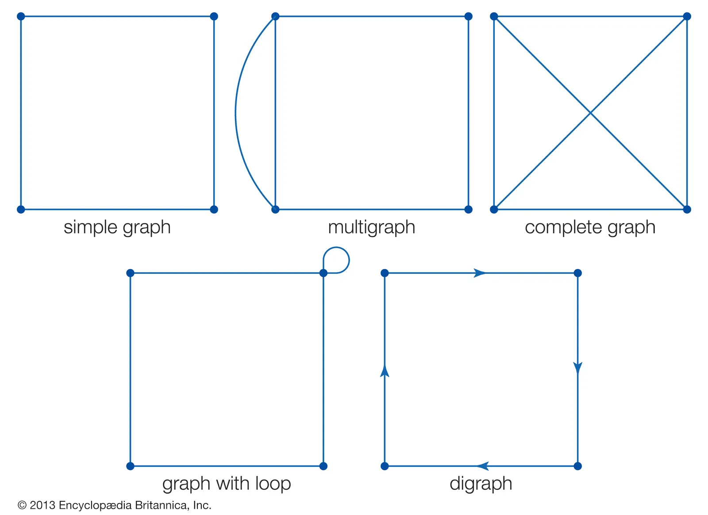
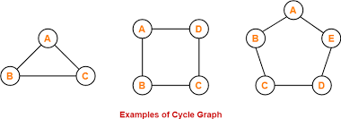

V(G) = {{'{'}}a, b, c, d{{'}'}}
E(G) = {{'{{a,b},{a,c}, {b,c},{a,d}}'}}
vertex 'a' and the edge {{'{a, b}'}} are said to be incident since the vertex is an end point of the edge
two vertices are adjacent if they are joined by an edge
graph with niether loops or multiple edges
The degree of a vertex deg(v) is the number of edges incident with it.
A loop will contribute 2 towards the degree.
Isolated vertex: not connected to any other edges
sum of degrees = 2 * no. of edges
if graph is simple graph just use vertices. - v1 -> v2 -> v3
A cycle is a sequence of distinct vertices and edges that begins and ends at the same vertex.
The separate parts of a disconnected graph
Outdegree - the number of arcs directed out of the vertex. Outdeg(vertex)
Indegree - the number of arcs directed in of the vertex. Indeg(vertex)